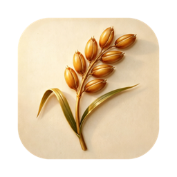

正在跳转到爱发电…
知我 KnowMe 创作者主页 · 用支付宝 / 微信支持开发者
如果没有自动跳转，请点击：
💗 前往爱发电afdian.com/a/knowme
📱 微信内打开提示
如果页面停在爱发电首页而非「知我 KnowMe」创作者主页，请点击右上角「···」→「在浏览器打开」，或长按上方按钮「在浏览器中打开」。

知我 KnowMe 创作者主页 · 用支付宝 / 微信支持开发者
如果没有自动跳转，请点击：
💗 前往爱发电afdian.com/a/knowme